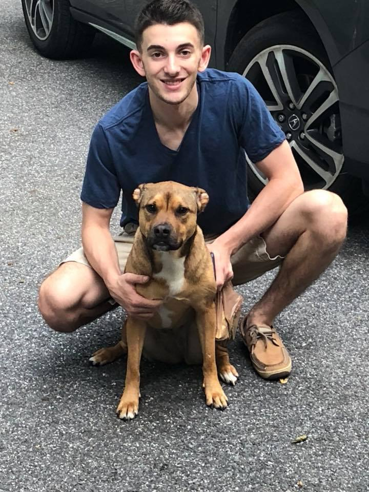
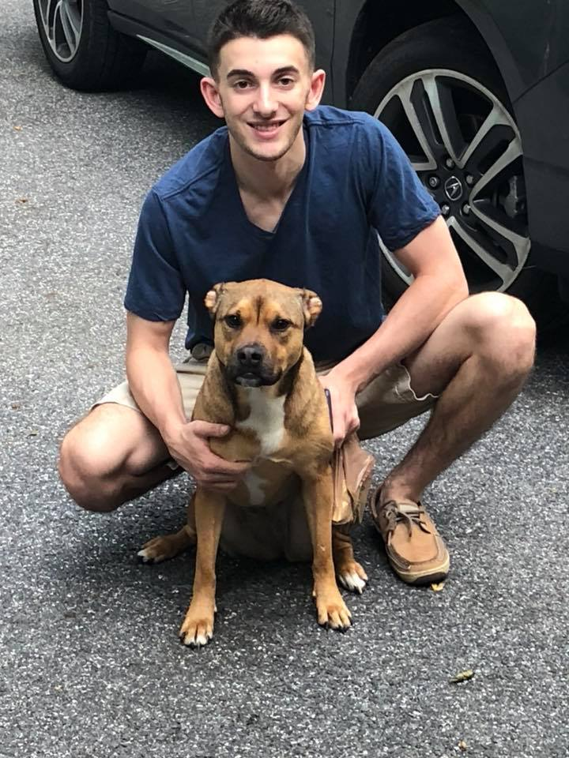

Hi, I'm Bradley!
Nice to meet you!
 

I am a motivated and ambitous sophomore at the University of Michigan who loves to take the leap. Whether it's traveling with no plan, competing in Spartan Races, or building various startups, I love to take chances and live life to the fullest.
Here at school, I am hoping to study Informational Analysis at the School of Information and minor in Entrepreneurship at the Ross School of Business. Aside from academics, I am involved in Pi Sigma Epsilon, a business fraternity where I have been a project manager for various companies. Learn more about PSE here!
Before attending the University of Michigan, I went to Beth Tfiloh in Baltimore, Maryland. There, I was a captain on the soccer, basketball and track and field teams, and was the president of TOP, the Tutoring Outreach Program, an organization that went to Pimlico Elentary School and tutored high-risk children.
Now that I have told you a bit about myself, I would love to hear from you. Feel free to check out the rest of my site to see some of the cool stuff I have worked on and reach out to hear about the new ideas I am working on. I'm always looking for partners on new projects, don't be afraid to contact me!